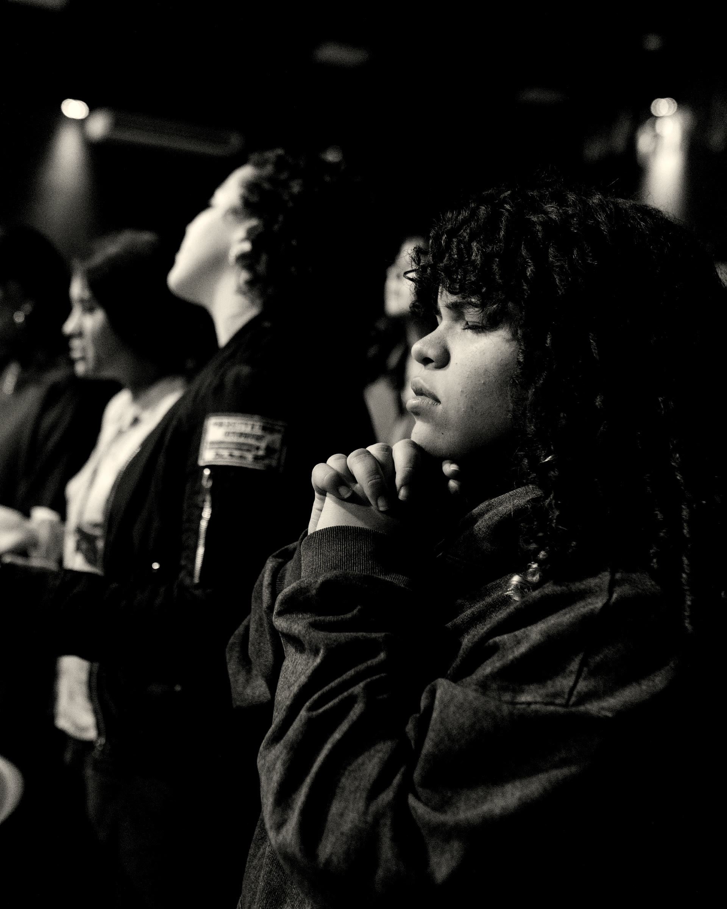
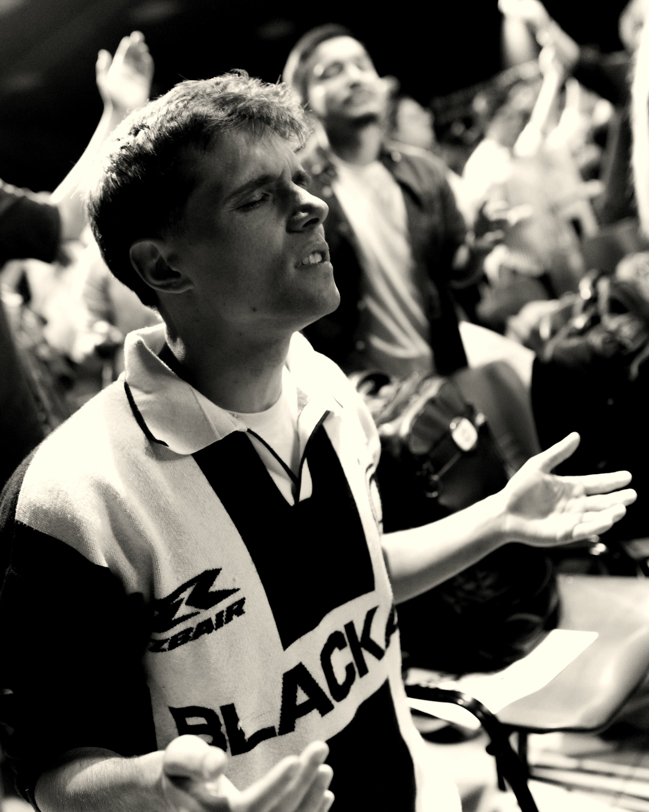
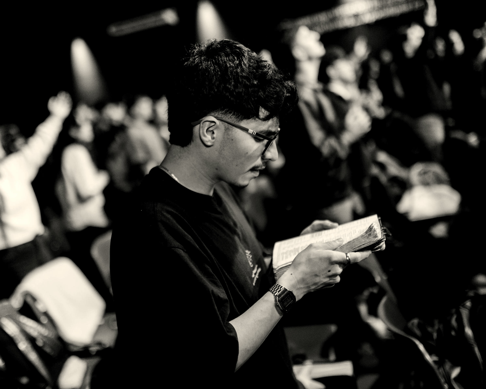
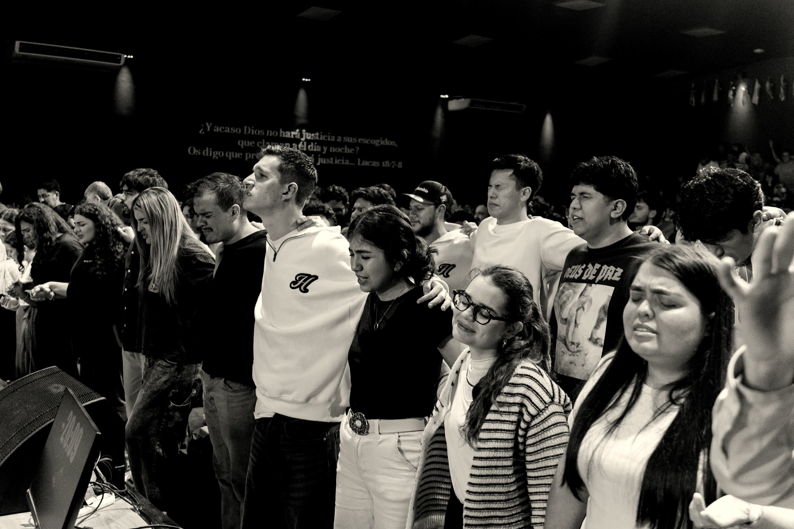

16 y 17 de noviembre · Perico
Noches de misión
con misioneros del Instituto MISION

«Id por todo el mundo y predicad el evangelio a toda criatura».
Marcos 16:15





Toda lengua
y toda nación

Reunión especial · noviembre
Lunes 16
20:30
ForoPrácticas de justicia
21:15
PlenariaHineni · Isaías 6
República de Siria 255 Entrada libre y gratuita

Martes 17 · por la mañana
Jornada de
evangelismo
evangelismo
10 A 12 HS
Salimos desde la iglesia a las calles de Perico, junto a los misioneros. ¡Sumate!
Reunión especial · noviembre
Martes 17
20:30
TalleresMatrimonios
Jóvenes y adolescentes
Cuarto de oración
Jóvenes y adolescentes
Cuarto de oración
21:15
PlenariaEl clamor del Espíritu
República de Siria 255 Entrada libre y gratuita
16 y 17 de noviembre · Perico
Noches de misión
con misioneros del Instituto MISION


16 · 17 NOV
Toda lengua y toda nación✦Noches de misión✦Id por todo el mundo✦Entrada libre y gratuita✦
Toda lengua y toda nación✦Noches de misión✦Id por todo el mundo✦Entrada libre y gratuita✦
Toda lengua y toda nación✦Noches de misión✦Id por todo el mundo✦Entrada libre y gratuita✦